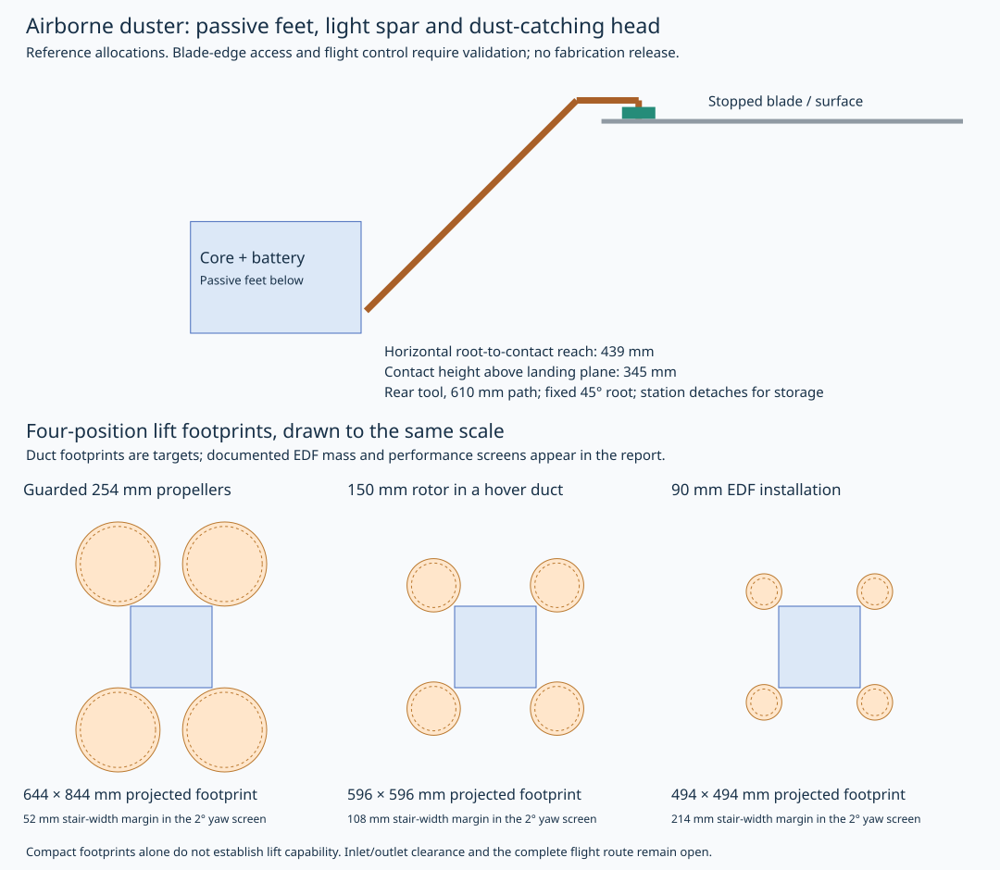
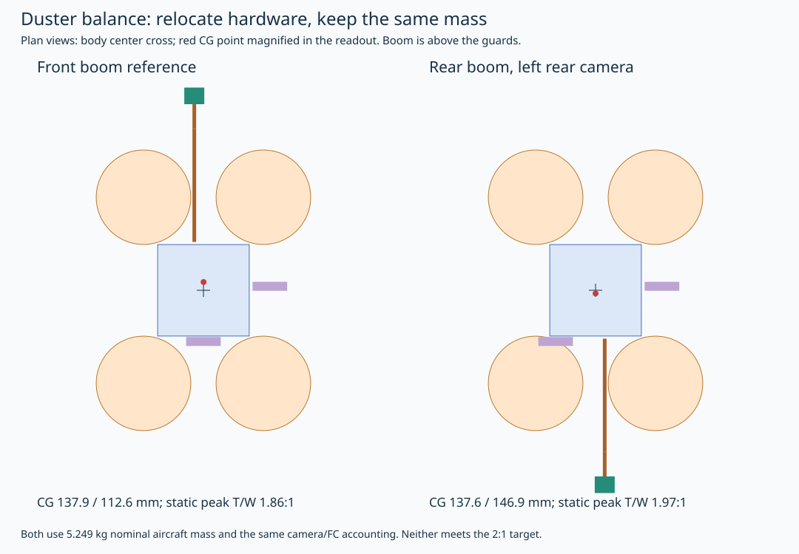

Preliminary design estimates. The dusting bottom has no wheels, drive motors, suction blower or sofa telescope. It requires an automatic launch/landing shuttle and station handling. Flight, cleaning and station motion are unqualified.
6S 5200 mAh comparison pack: 80% nominal energy, 30 s landing reserve, 20% energy margin, 1.2× hover during travel, 1.1× during cleaning plus 2 W tool sensing. Thrust screen assumes 75% retained thrust with guards and 21 V supply. These are modeling assumptions, not continuous motor ratings.

Compact lift comparison
| Arrangement | Projected footprint | Performance evidence |
|---|
These are packaging references. The EDF study below now includes two documented fan/motor assemblies and complete installed mass allowances. The 150 mm hover duct remains an unselected target.
The lightweight quad dusting result does not carry over to the heavier vacuum or mop. The same universal lift top still needs separate checks for every bottom.
Rear boom improves balance without ballast

The rear stereo camera moves left, opposite the right-side downward camera. Camera and flight-controller mass is now assigned at the actual allocations. The station installs a rear-facing keyed boom; the aircraft approaches with that tool end leading. The body interface stays in place.
Documented four-EDF comparison
Manufacturer data is a stabilized-voltage sweep. Power interpolation is only an equivalent-operating-point estimate, with equal rotor loads and 10% overhead. No extrapolation outside the supplied samples. EDF trim, yaw control, installed height and continuous duty are unresolved. These are not selected components.
| Installed top item | Nominal total mass | Evidence |
|---|
Automatic handling
The station moves the assembled robot onto an open launch platform. On return, the platform supports the robot, verifies rotor stop and carries it to the exchanger. The station removes the lightweight boom at its keyed root, services the microfiber head in a vacuum pocket, and stores the boom vertically. Passive feet support an off-station landing but provide no ground travel.
The fixed angled boom has a 610 mm total path, about 439 mm horizontal reach from its root and a 345 mm contact height above the robot landing plane. This is an interpretation of the approximate two-foot tool requirement. The robot stays below the stopped fan; its wrist reaches over a blade edge. Actual fan clearances, optical occlusion and contact behavior need validation.